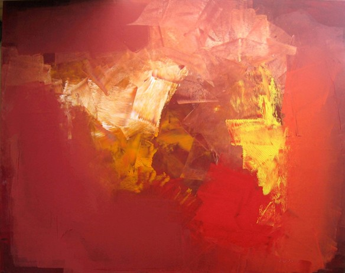
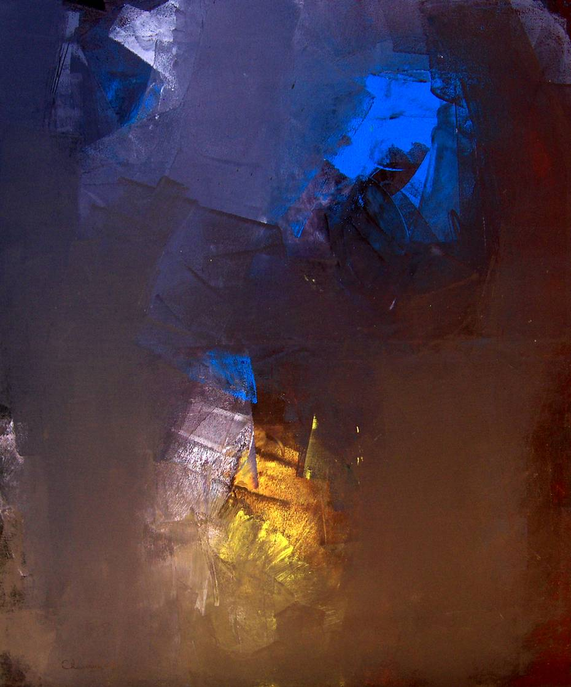
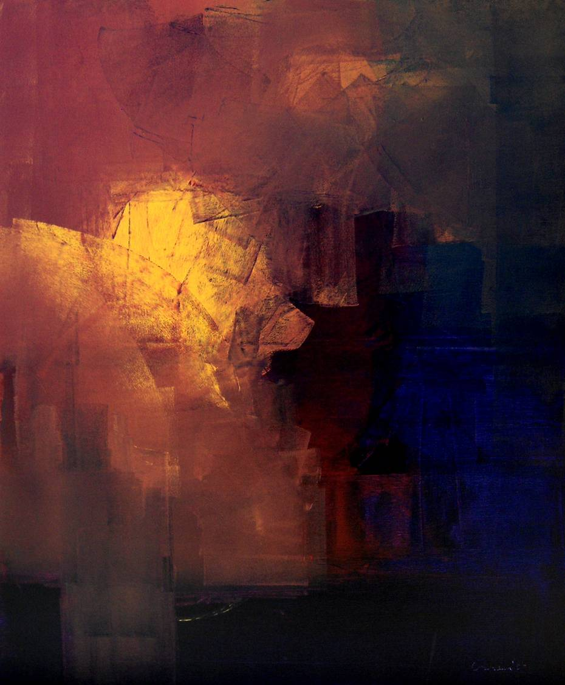
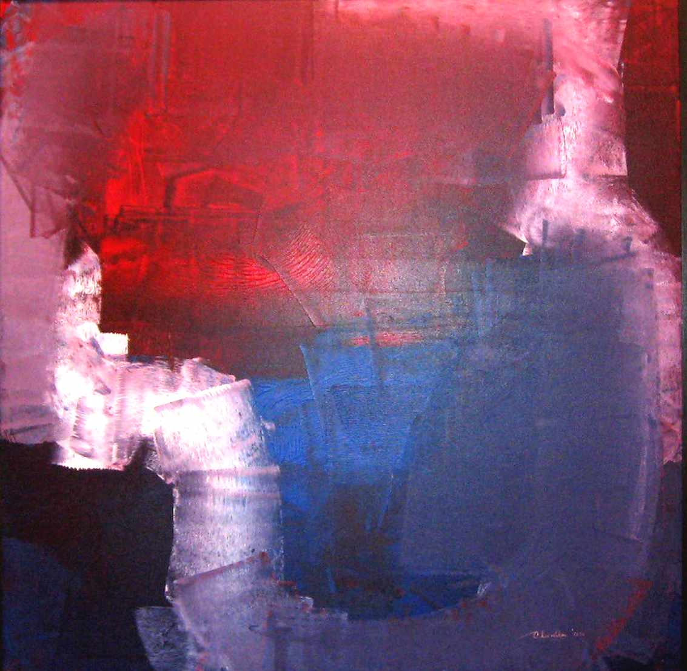

The compositions of Chandan Das are journeys of self reflection into the shadows of our minds as well
as into the light of happiness. His paintings are minimalistic in nature as he does not crowd his canvas
with too many things. Yet by using broad brushstrokes, just a few colours and a clever play of light and
shadows he is able to depict the various emotions that man goes through with the passage of time. His use
of colours is significant as they manifest into various emotions of anger, desire, loss, pain and joy.
Many a times he shows human mind and soul drowning in the darkest of sensations. But his works eventually
evoke a sense of hope as the dichotomy of light and darkness in an individual is not suppressed rather it
is celebrated in his art.
EMOTION OF MYSELF 1

EMOTION OF MYSELF 1 , Chandan Das ,
2010
Acrylic On Canvas
Dimensions - 48" X 60"
2010
The canvas gives the impression of a ball
of fire bursting out in a moment of
combustion. The strokes of brush are
used in such a way as though something
is pushing its way outside. This brings to
mind emotions of anger and frustration,
a need to give voice to things which
have remained suppressed till this
moment of combustion. But this initial
hint at negative emotions give way to
positivity as one moves the eyes from
the outside of the canvas to the centre of
the painting. The two primary colours
used in this canvas are red and yellow
both associated with fire as well as
sunshine. This itself hints at the idea of
destruction as well as nourishment.
Both fire and sunshine has the power to
destroy yet both has the ability to
nurture and give life. There is a flow of
energy in this painting which is
captured by the red which gives way to
yellow. Fire gives way to a mellow
version of happiness and vitality. Hence,
this burning moment is a symbol of self-
affirmation and progression.
EMOTION OF MYSELF H

EMOTION OF MYSELF H , Chandan Das ,
2010
Acrylic On Canvas
Dimensions - 40" X 48"
201
Can light exist without darkness? How do
we know what is goodness if we have not
experienced evil? This piece dwells on these
questions as the canvas reflects the play of
light and darkness. Good and evil can be
seen as two sides of the same coin, one
cannot be present in the absence of other.
The colours used in this canvas are yellow,
brick red, blue and black but these colours
are not distinct in the painting rather they
look fused together as each colour gives
way to another one. This implies a lack of
separation and segregation between the
ideas of goodness and darkness which is
symbolized by the use of yellow and black
in the painting. While the use of yellow
symbolizes vitality and happiness, the use of
black recalls sadness and alludes to a larger
tragedy. Each individual has goodness and
evil, light and darkness within himself and
this painting captures this duality of soul.
But what is interesting in this painting is
that it can be observed that there an
impression of face with a wide mouth
caught in the act of swallowing the darkness
which lies at one corner. Perhaps like all
happy endings, there is hope that goodness
will triumph evil eventually.
EMOTION OF MYSELF F

EMOTION OF MYSELF F , Chandan Das ,
2010
Acrylic On Canvas
Dimensions - 40" X 48"
2010
The canvas invites the viewers to go into the
deeper brushstrokes of the painting recalling
the inner landscape of the mind. In the centre
is a cave-like space which gives an impression
of a secret intimate space which has hitherto
remained hidden. Each individual has such
dark spaces in their souls which is reflected in
this painting. This dark centre is encapsulated
by two colours of blue and red, while the
brushstrokes painting the colour red is
smoother, the blue merging with white is
harsher and separated. This recalls fire, the
flames of which cannot be separated vs the
blocks of ice. Fire and ice, energy and calmness
merge in this painting to create an environment
of balance—a moment of peace. This piece
beckons its viewers into a moment of
introspection as the painting moves inwards
towards the centre where the colours no longer
retain its distinctiveness. This piece hints at a
possibility of serenity which can be born when
balance of emotions is achieved.
EMOTION OF MYSELF 4

EMOTION OF MYSELF 4 , Chandan Das ,
2010
Acrylic On Canvas
Dimensions - 48" X 48"
2010
In a dark well-like space of the mind and soul, this
painting presents a glowing ball of light, dull but very
present. In the journey of life, there are so many ups
and downs that sometimes it seems impossible to keep
track of it. In moments like these everything collapses
into chaos as one enters a dark tunnel. The use of blue
in this painting which merges with black recalls this
descends into this state of chaos. The painting gives the
impression of a tunnel like space which symbolizes this
descent and collapse that marks the human soul.
Emotions can be turbulent and this inner turmoil is
captured in the vivid blue which turns into a duller
shade and eventually merges into black at the centre of
the canvas. Blue brings to the mind the calmness of the
ocean but here this blue could be a reference to sadness
which gives way to darker thoughts as denoted by the
use of black. Yet in this landscape of disorder and
confusion the presence of the glowing ball of light
stands out as a symbol of hope and joy. It is vital that
this light is presented in such a way that it is ascending
amidst the darkness which beckons a moment of
rejoicing as the cheer of triumph over turmoil prevails.